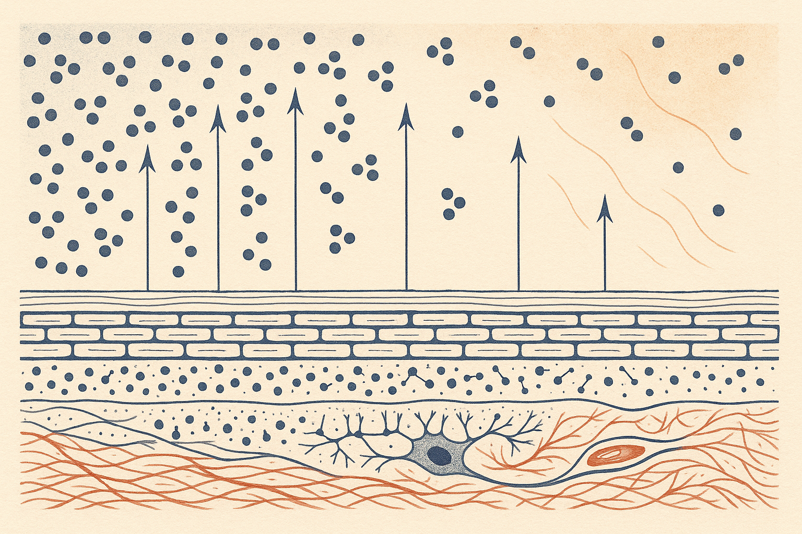
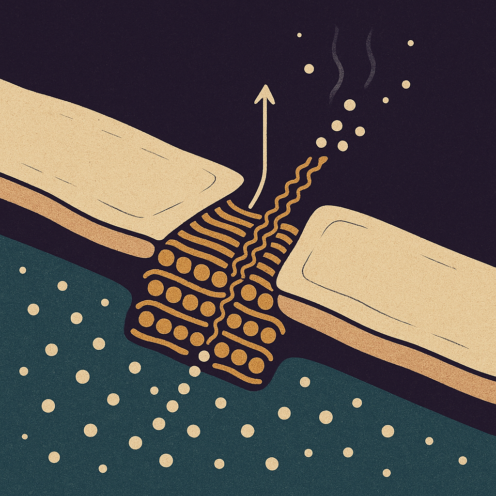
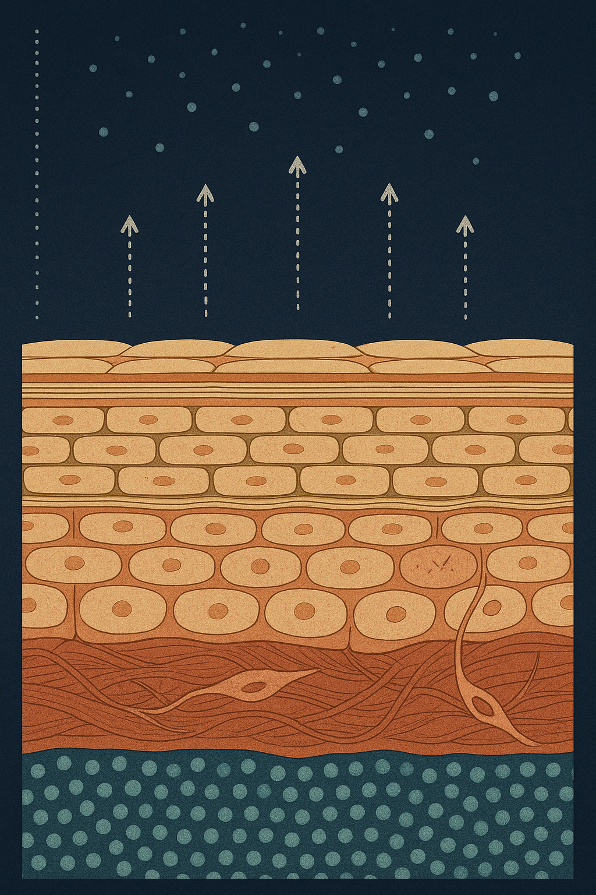

Review below. Reply approve to publish the Facebook post, or tell me edits.

Your heater is drier than the outback.
Most people blame the cold. Every winter, the same conversation: my skin hates the cold, my skin is drier because it is cold. It is a reasonable assumption. It is also the wrong culprit.
The cold is not what is drying you out. The air is. Specifically, the air inside your own house.
Worth saving for the next cold snap. None of this needs a new product line.
Now the why, because the why is what makes those five stick.
Here is the bit of physics that explains almost everything about winter skin.
Warm air can hold far more water vapour than cold air can. So take a typical Melbourne or Canberra winter morning, 10C outside, sitting at a fairly damp 80% relative humidity. Now pull that same air into your living room and heat it to 21C with a reverse-cycle unit or a heater. You have not removed a single drop of water. You have simply given that water a much bigger room to spread out in.
Relative humidity falls off a cliff. It can land in the 20s. For reference, that is a drier atmosphere than a lot of arid inland Australia on an average day. Your lounge room in July can genuinely be drier than the outback.
And that dry air is not passive. It is a sponge sitting against your face for the fourteen hours a day you are indoors.
Your skin is wet underneath and dry on top. The lower layers are essentially damp tissue. The outer surface meets the air. Water moves from the wet side to the dry side, constantly, without stopping, whether you notice or not.
The proper name is transepidermal water loss. In plain terms, it means this: water is always leaving your skin outward into the air, and how fast it leaves depends on how thirsty that air is.
In humid February air, the gradient is shallow and the loss is slow. In heated 20% winter air, the gradient is steep and the loss speeds up. Nothing about your skin has changed. The air on the other side of it has.
This is also why a car with the heater blasting on your face for a 40 minute commute is one of the more aggressive things you do to your skin all day, and why the office you cannot control the thermostat in feels worse than being outside in the wind.
The only thing standing between your damp tissue and that thirsty air is a layer roughly as thick as a sheet of cling film.
The useful way to picture it is bricks and mortar. The bricks are corneocytes, flattened dead skin cells packed in a tight grid. The mortar holding them together is a lipid blend: ceramides, cholesterol and free fatty acids, in a fairly specific ratio. The bricks give structure. The mortar does the waterproofing.
That mortar is what winter goes after. Dry air pulls water through it faster than usual. Hot showers dissolve lipids straight out of it (fats melt, and hot water behaves like a solvent on those lipids). Wind physically strips the surface. Foaming cleansers designed to remove oil do not distinguish between the oil you want gone and the mortar you need.
Erode the mortar and the wall leaks. More water out, and, importantly, more things in. That is the whole story of winter sensitivity in one sentence.
Here is the thing worth taking away, because it changes what you do next.
Winter sensitivity is almost never a new skin type. It is a barrier problem wearing a costume.
Two signals give it away. The first is tightness right after cleansing, that pulling feeling before you have applied anything. The second, more telling one: products you tolerated perfectly well in March now sting. A vitamin C that was fine. A retinol you had built up to slowly. An exfoliating toner that never bothered you.
The product did not change. The wall did. Those actives are now reaching places they previously could not, because the mortar has thinned. People usually read that sting as "my skin has become sensitive" and go buy something for sensitive skin, when the real answer is to stop damaging the mortar and let it rebuild.
Not in the way people hope.
Light does not add water to skin. Photobiomodulation is not hydration. No LED device, ours included, will repair a stripped barrier or replace lipids you have washed away. If your skin is stinging, the answer is fewer actives and more lipids, not another device. Anyone telling you a mask fixes winter dryness is selling you something.
What a light session can be, during a barrier-recovery week, is the one step that asks nothing of your skin. Ten minutes, nothing applied, nothing rubbed on, nothing taken off. When you have parked your acids and are trying not to disturb anything, having a calm step that does not strip is genuinely useful. That is the whole claim. It is a smaller claim than most brands would make, and it is the accurate one.
If you ever want a closer look at how the mask fits a low-irritation week, it is here: the Redermis light therapy mask
We are curious about the real-world version of this one, because heating habits vary enormously across the country.
What is your winter tell? The moment you know your barrier has had enough. Is it tightness after cleansing, the serum that suddenly stings, flaking around the nose, or something else entirely? And has anything actually fixed it for you: the humidifier, the cooler showers, or just waiting out August?
#winterskin #skinbarrier #skincareaustralia #dryskin #skinhealth #redermis

That is why your skin feels different in winter. Not the cold. The air inside your house.
Warm air can hold more water than cold air, but a heater only warms it, it does not add any. So relative humidity in a heated room can crash into the 20s or 30s. Your skin sits at roughly 100% humidity underneath. Water moves down that gradient, outward, faster than your barrier can replace it. The lipids between your skin cells are the mortar holding the bricks together, and dry air pulls water straight through the gaps.
Two things that genuinely help, worth saving before your next shower:
1. The three-minute rule. Moisturise within three minutes of getting out of the shower, while skin is still damp, so you trap water instead of chasing it.
2. Park your actives for a week (retinol, acids, strong vitamin C) until the stinging stops.
Honest limit: light does not hydrate skin. If yours is stinging, the fix is lipids and fewer actives, not another device.
So, what is your winter skin tell? Tight after cleansing, flaking around the nose, or a product that suddenly stings? Tell us below, we read every reply.
If you ever want a closer look at the mask, it is here: https://redermis.com.au/products/red-light-therapy-face-neck-mask
#WinterSkin #SkinBarrier #AustralianSkincare #SkincareScience
IMAGE PROMPT: Editorial conceptual science illustration in the style of Scientific American or Quanta Magazine. A clean, legible cross-section diagram of the skin's outer barrier rendered as a brick-and-mortar wall: rows of rounded flattened cell "bricks" with a warm golden lipid "mortar" between them. Below the wall, a dense field of small blue water droplet particles; above the wall, the droplets thin out into sparse, widely scattered specks against pale warm air, with slim tapering arrows showing water moving upward and outward through gaps in the mortar. A subtle vertical gradient bar of dot density on one side visually encodes the humidity difference. Muted editorial palette: warm sand, deep charcoal, soft terracotta, cool slate blue accents. Flat vector-informed shading, precise linework, generous negative space, matte paper texture. Absolutely no text, no numbers, no labels, no logos, no people, no faces, no products, no devices, no technology.

Your heater is drier than the outback.
Here is the bit nobody mentions. Warm air can hold more water than cold air, and your heater warms it without adding any, so indoor humidity can slide into the 20s while the room feels perfectly cosy.
Your skin sits in that gradient all evening and quietly loses water to the room. The lipids between your skin cells are the mortar holding the bricks together, and thirsty air pulls water straight out through the gaps.
That is why the tightness shows up at 9pm, indoors, not on the walk to the car.
Three things that actually help:
1. Moisturise on damp skin, within about three minutes of washing. You are trapping water, not adding it.
2. Drop the thermostat two degrees. Less warming, less drying, and jumpers exist.
3. Pause the acids and retinoids for a week if anything stings. A stinging barrier is asking for a rest, not more actives.
And one honest line, because we would rather say it than not: light does not hydrate skin. Nothing we sell fixes a stripped barrier. Lipids do.
Tell us your winter skin tell in the comments. Tight, flaky, or suddenly stinging? Link in bio if you want a closer look at what we make.
#winterskin #skinbarrier #skincareaustralia #barrierrepair #skinhealth
IMAGE PROMPT: Vertical 4:5 editorial science illustration in the spirit of New Scientist and Quanta, on an ink-navy ground with warm parchment, terracotta and restrained gold accents. The lower half is a histologically accurate skin cross-section in fine editorial linework: a stratum corneum of many flattened corneocyte bricks bound by fine parallel golden lipid-lamellae mortar lines, then differentiated living epidermal strata (granulosum with granules, spinosum, one ordered basal row) sitting on a clean basement membrane, then a woven terracotta collagen dermis containing exactly one spindle fibroblast and one capillary loop. Beneath the surface the water molecules are packed dense and luminous teal. The upper half is a sparse field of pale slate-blue water-vapour dots that thins steadily as it rises, reading as empty thirsty air, with generous negative space. Several slim dotted arrows rise strictly upward through gaps in the mortar seams and dissipate into that sparse field. A slender unlabelled vertical dot-density scale bar runs down one margin as a design element, dense at the base and near bare at the top. No glowing rectangles or panels, no ribbons or scrollwork, no trees or roots, no product, no mask, no device, no technology, no people, no faces, no text, no numbers, no logos, not a photograph.
**Title:** Why your heater is drying out your skin (and what actually helps in winter)
**Description:** Moisturise on damp skin, within three minutes of your shower, because you are trapping water rather than adding it. Here is why that habit matters more in winter. Heaters warm indoor air without adding moisture, so humidity drops and dry air pulls water out through the skin barrier faster than the lipid mortar can hold it. Dryness spikes in a warm lounge room, not on a cold walk. Light therapy does not hydrate skin. If yours is stinging, park the actives for a week and lead with lipids.
**Link:** https://redermis.com.au/blogs/journal
**Hashtags:** #WinterSkincare #DrySkinTips #SkinBarrier #SkincareScience #AustralianSkincare
Note: this pin reuses the Instagram image (no separate image is generated for Pinterest).